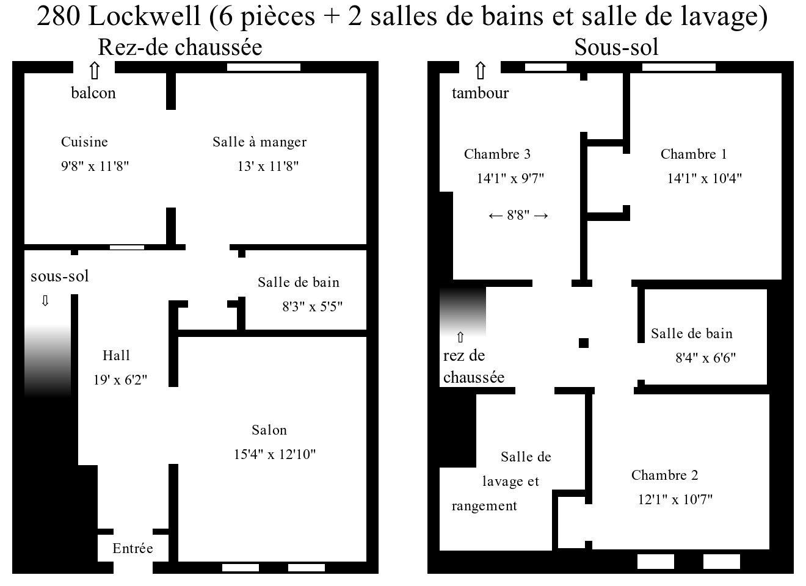

Libre dès maintenant.
Chauffage, électricité et eau-chaude inclus.
Pour plus d'informations, contactez:
François Laflamme
flaflamm@yahoo.com
(418) 524-1794
Rez-de-chaussée: plafonds de 9 pieds ou plus, planchers de bois ou céramique.
Sous-sol: deux des chambres ont de grandes fenêtres lumineuses, plafonds de près de 8 pieds, planchers de bois, de céramique ou flottants.
